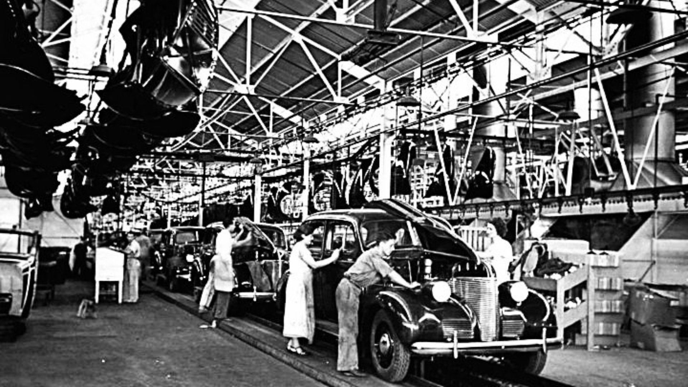

Desarrollo Eje I – La economía como dimensión de la vida social
La problematica economica
La problemática económica surge del conflicto básico entre recursos limitados y necesidades ilimitadas.
Esta tensión inherente a toda organización social genera una serie de fenómenos que afectan de manera directa el bienestar de la población.
Entre los principales problemas económicos se encuentran la inflación, el desempleo y la recesión, que no solo son variables estadísticas,
sino procesos que determinan la calidad de vida de millones de personas.
Inflación
La inflación es el aumento persistente y generalizado de los precios de bienes y servicios.
Cuando hay inflación, el dinero pierde valor y cada vez se puede comprar menos con la misma cantidad.
Este fenómeno afecta primero a las familias trabajadoras, que ven reducido su poder adquisitivo,
pero también repercute en toda la economía: dificulta la planificación de empresas, reduce inversiones,
genera incertidumbre y puede llevar a que la población busque protegerse mediante la compra de moneda extranjera o bienes duraderos,
lo que profundiza aún más la inestabilidad. Las causas de la inflación son diversas: emisión monetaria sin respaldo,
aumentos de costos de producción, desequilibrios fiscales, escasez de productos, especulación financiera o crisis internacionales que encarecen materias primas esenciales.
Desempleo
El desempleo es otro problema económico crucial que afecta a millones de personas en todo el mundo.
Se refiere a la situación en la que individuos en edad y capacidad de trabajar no pueden encontrar empleo.
El desempleo no solo implica la pérdida de ingresos para las familias, sino que también tiene efectos sociales profundos:
aumenta la pobreza, genera exclusión social, deteriora la salud mental y puede conducir a la violencia y la inestabilidad social.
Las causas del desempleo son variadas: crisis económicas, cambios tecnológicos que desplazan mano de obra,
políticas laborales inadecuadas, falta de inversión en sectores productivos o desajustes entre la oferta y demanda de trabajo.
Recesión y estancamiento
Una recesión implica una caída general en la actividad económica de un país.
La producción disminuye, cierran empresas, los salarios pierden valor y el empleo se reduce.
Si el estancamiento se prolonga, la sociedad comienza a enfrentar un deterioro estructural:
disminuye la inversión pública, se reducen derechos laborales y aumenta la pobreza. A medida que la gente consume menos,
las empresas producen menos y la economía entra en un círculo vicioso difícil de romper.
El trabajo como actividad social fundamental
El trabajo es una actividad social fundamental que va más allá de la simple producción de bienes y servicios.
Es a través del trabajo que los individuos no solo satisfacen sus necesidades materiales, sino que también construyen su identidad,
desarrollan habilidades, establecen relaciones sociales y contribuyen al bienestar colectivo.
El trabajo tiene múltiples dimensiones: económica, social, cultural y psicológica.
En su dimensión económica, el trabajo es el motor que impulsa la producción y el crecimiento.
Socialmente, el trabajo organiza las relaciones entre individuos y grupos, definiendo roles, jerarquías y estructuras de poder.
Culturalmente, el trabajo refleja valores, tradiciones y formas de vida específicas de cada sociedad.
Psicológicamente, el trabajo proporciona un sentido de propósito y realización personal.
- Función económica: produce los bienes y servicios necesarios para vivir
- Función social: integra a las personas dentro de redes, grupos y comunidades
- Función cultural: transmite valores, prácticas y tradiciones laborales
- Función subjetiva: aporta sentido, identidad y autoestima.
- Función política: es un espacio de negociación de derechos y condiciones de vida.
Trabajo remunerado y no remunerado
El trabajo puede ser remunerado, cuando se recibe un salario o pago por la labor realizada,
o no remunerado, como el trabajo doméstico y de cuidado que tradicionalmente realizan las mujeres.
Ambos tipos de trabajo son esenciales para el funcionamiento de la sociedad y la economía,
aunque el trabajo no remunerado suele ser invisibilizado y subvalorado en términos económicos y sociales.
Reconocer la importancia de ambos tipos de trabajo es fundamental para construir sociedades más justas e inclusivas.
Producción e intercambio
La producción es el proceso mediante el cual la sociedad transforma los recursos naturales en bienes y servicios.
No es solo un hecho técnico: es una actividad social compleja que requiere división del trabajo,
cooperación, conocimientos acumulados y decisiones políticas sobre qué producir,
para quién y con qué recursos.

El intercambio aparece porque ningún grupo social puede producir todo lo que necesita.
Desde los sistemas de trueque hasta las complejas cadenas globales de comercio actuales,
intercambiar bienes y servicios ha sido una necesidad constante.
Hoy, un producto puede tener componentes fabricados en varios países antes de llegar al consumidor final,
lo que demuestra el grado de interdependencia global.
Esta interdependencia puede generar oportunidades, pero también desigualdades profundas:
no todos los países participan de los beneficios de forma equitativa.
La economía y otras esferas sociales
La economía no funciona de manera aislada; está profundamente entrelazada con otras esferas sociales como la política, la cultura, la tecnología y el medio ambiente.
Las decisiones económicas afectan y son afectadas por factores políticos (leyes, regulaciones, políticas fiscales),
culturales (valores, tradiciones, hábitos de consumo), tecnológicos (innovaciones, automatización) y ambientales (recursos naturales, sostenibilidad).
Por ejemplo, una política económica que prioriza el crecimiento a corto plazo puede generar beneficios inmediatos,
pero también puede conducir a la degradación ambiental y a la exclusión social a largo plazo.
La cultura influye en cómo trabajamos, qué valoramos,
cómo consumimos, cómo entendemos el éxito y qué lugar ocupa el ahorro o el endeudamiento en nuestras vidas.
Las decisiones económicas también pueden reforzar o transformar patrones culturales.
La educación es otro pilar fundamental: forma trabajadores, técnicos y profesionales que las economías necesitan.
A su vez, el acceso a la educación depende de políticas económicas adecuadas.
Dimensión cultural de la economía
La economía tiene una dimensión cultural que influye en cómo las sociedades organizan la producción, el intercambio y el consumo.
Los valores culturales determinan qué se considera valioso, cómo se distribuyen los recursos y qué formas de trabajo son aceptables o deseables.
Por ejemplo, en algunas culturas, el trabajo colectivo y la cooperación son más valorados que el individualismo competitivo.
Estas diferencias culturales afectan las estructuras económicas y las políticas públicas.
Los cambios culturales pueden transformar la economía:
movimientos como el consumo responsable, la economía circular,
el veganismo, el comercio justo o las cooperativas surgen como respuestas éticas y culturales a problemas económicos y ambientales.
Principales corrientes del pensamiento económico
El pensamiento económico no es único ni estático.
A lo largo de la historia han surgido diversas corrientes que intentaron explicar cómo funciona la economía y proponer soluciones a los problemas de producción,
distribución y trabajo. Estas corrientes reflejan no solo debates teóricos, sino también las tensiones sociales y políticas de cada época.
Una de las primeras corrientes fue el mercantilismo,
predominante en Europa entre los siglos XVI y XVIII.
Para los mercantilistas, la riqueza de un país dependía de la acumulación de metales preciosos,
como el oro y la plata. Creían que era fundamental exportar más de lo que se importaba y controlar fuertemente la economía desde el Estado.
Este pensamiento acompañó la expansión colonial y el nacimiento del capitalismo comercial.
En oposición, a fines del siglo XVIII apareció la fisiocracia en Francia,
que sostenía que la verdadera riqueza provenía de la tierra y de la agricultura.
Para los fisiócratas, el trabajo agrícola era la base de la prosperidad y defendían una mayor libertad económica frente al control estatal.
A finales del siglo XVIII y principios del XIX, Adam Smith sentó las bases del liberalismo económico con su obra "La riqueza de las naciones".
Smith argumentaba que el interés individual, guiado por la "mano invisible" del mercado,
conducía al bienestar general. Promovía la competencia, la libre empresa y la mínima intervención del Estado en la economía.
En el siglo XIX, Karl Marx ofreció una crítica profunda del capitalismo.
Marx veía la economía como una lucha de clases entre capitalistas (dueños de los medios de producción) y proletarios (trabajadores).
Sostenía que el capitalismo generaba desigualdades y crisis periódicas, y preveía su eventual superación mediante la revolución proletaria y la instauración del socialismo.
A principios del siglo XX, John Maynard Keynes revolucionó el pensamiento económico con su teoría del intervencionismo estatal.
Keynes argumentaba que los mercados no siempre se autorregulan eficientemente y que, en tiempos de crisis,
el Estado debía intervenir para estimular la demanda mediante políticas fiscales y monetarias expansivas.
Sus ideas influyeron en la creación del Estado de bienestar y en las políticas económicas de muchos países durante gran parte del siglo XX.
Más adelante, en la segunda mitad del siglo XX,
tomó fuerza el neoliberalismo, que retomó la idea de limitar el papel del Estado y dejar mayor libertad al mercado.
Autores como Friedrich Hayek y Milton Friedman defendieron políticas de privatización,
apertura comercial y flexibilización laboral. Estas ideas se aplicaron con fuerza en América Latina en los años noventa,
con consecuencias de desigualdad y precarización del trabajo.
En las últimas décadas, han surgido nuevas corrientes que buscan integrar aspectos sociales y ambientales en el análisis económico,
como la economía ecológica, la economía solidaria y el desarrollo sostenible.
Estas corrientes cuestionan el paradigma del crecimiento ilimitado y proponen modelos alternativos que priorizan el bienestar humano y la preservación del planeta.
En resumen, las principales corrientes del pensamiento económico reflejan la diversidad de enfoques y debates sobre cómo organizar la economía para satisfacer las necesidades humanas.
Cada corriente aporta perspectivas valiosas que enriquecen la comprensión de los fenómenos económicos y sus implicancias sociales.
Microeconomía y macroeconomía
La microeconomía y la macroeconomía son dos ramas fundamentales del estudio económico que abordan diferentes niveles de análisis.
La microeconomía se centra en el comportamiento de los agentes individuales, como consumidores, empresas y trabajadores,
y cómo toman decisiones sobre la asignación de recursos escasos.
Analiza temas como la oferta y demanda, la formación de precios, la competencia en los mercados y la teoría del consumidor y la producción.

Formas cooperativas y comunitarias de trabajo
Las formas cooperativas y comunitarias de trabajo representan alternativas al modelo tradicional de empleo asalariado.
En las cooperativas, los trabajadores son también los dueños de la empresa, participando en la toma de decisiones y compartiendo los beneficios.
Este modelo promueve la solidaridad, la democracia interna y la equidad en la distribución de ingresos.
Las organizaciones comunitarias, por su parte, se basan en la colaboración entre miembros de una comunidad para satisfacer necesidades comunes,
como la producción agrícola, la prestación de servicios o el desarrollo de proyectos locales.
Estas formas de trabajo fortalecen el tejido social, fomentan la participación ciudadana y contribuyen al desarrollo sostenible.
Desarrollo Eje II – Las formas de organización del trabajo
División social del trabajo
La división social del trabajo se refiere a la especialización de tareas dentro de una sociedad o economía.
Desde tiempos prehistóricos, los seres humanos han dividido el trabajo para aumentar la eficiencia y productividad.
En las sociedades tradicionales, esta división estaba basada en factores como el género, la edad o el estatus social.
Con la Revolución Industrial, la división del trabajo se intensificó y se organizó de manera más sistemática en fábricas y empresas,
donde cada trabajador realizaba una tarea específica dentro de un proceso productivo más amplio.
Esta especialización permitió aumentar la producción, pero también generó nuevas formas de alienación y desigualdad entre los trabajadores.
Formas organizativas pre-capitalistas
Antes del surgimiento del capitalismo, las formas organizativas del trabajo estaban basadas en estructuras sociales y económicas diferentes.
En las sociedades tribales y comunitarias, el trabajo se organizaba de manera colectiva, con roles definidos por la tradición y la cultura.
En las sociedades feudales, el trabajo estaba estructurado en torno a relaciones de servidumbre y dependencia entre señores y siervos.
La producción se realizaba principalmente para el autoconsumo y el intercambio local, con poca especialización o mercantilización.
Estas formas organizativas reflejaban las relaciones de poder y las dinámicas sociales de cada época, y sentaron las bases para la posterior evolución hacia el capitalismo.
Mecanización y desarrollo tecnológico
La mecanización y el desarrollo tecnológico han sido factores clave en la transformación de las formas de organización del trabajo.
Desde la Revolución Industrial, la introducción de máquinas y tecnologías ha permitido aumentar la productividad y cambiar la naturaleza del trabajo.
La mecanización ha desplazado muchas tareas manuales, creando nuevas oportunidades laborales en sectores industriales y de servicios,
pero también ha generado desafíos, como la pérdida de empleos tradicionales y la necesidad de nuevas habilidades y capacitación.
A lo largo del tiempo, el desarrollo tecnológico ha continuado revolucionando el trabajo, desde la automatización en fábricas hasta la digitalización y el trabajo remoto en la era contemporánea.
El conocimiento como factor de producción
En las economías modernas, el conocimiento se ha convertido en un factor de producción fundamental.
A diferencia de los recursos naturales o el capital físico, el conocimiento es intangible, acumulativo y generador de innovación.
Las empresas y organizaciones que invierten en investigación, desarrollo y capacitación de sus trabajadores pueden obtener ventajas competitivas significativas.
El conocimiento impulsa la creación de nuevos productos, servicios y procesos, y es esencial para adaptarse a los cambios tecnológicos y del mercado.
En este contexto, la gestión del conocimiento y la formación continua se han vuelto prioritarias para el desarrollo económico y social.
Revolución Industrial y orígenes del capitalismo
La Revolución Industrial, que comenzó a finales del siglo XVIII en Gran Bretaña, marcó un punto de inflexión en la historia económica y social.
Este proceso transformó radicalmente las formas de producción y organización del trabajo, dando origen al capitalismo industrial.
La introducción de máquinas, la mecanización de procesos y la creación de fábricas permitieron una producción masiva y eficiente,
lo que llevó a un crecimiento económico sin precedentes.
Sin embargo, también generó profundas desigualdades sociales, condiciones laborales precarias y nuevas dinámicas de poder entre capitalistas y trabajadores.
La Revolución Industrial sentó las bases para el desarrollo del sistema capitalista global que conocemos hoy.

Taylorismo y Fordismo
El Taylorismo y el Fordismo son dos modelos de organización del trabajo que surgieron durante la Revolución Industrial para aumentar la eficiencia y productividad en las fábricas.
El Taylorismo, desarrollado por Frederick Winslow Taylor a principios del siglo XX, se basa en la aplicación de métodos científicos para optimizar las tareas laborales.
Taylor propuso la división del trabajo en tareas simples y especializadas, la estandarización de procesos y la supervisión estricta de los trabajadores para maximizar la producción.
Este enfoque buscaba eliminar el desperdicio de tiempo y recursos, pero a menudo resultaba en la alienación de los trabajadores, quienes perdían autonomía y control sobre su labor.
Por otro lado, el Fordismo, implementado por Henry Ford en la industria automotriz, llevó las ideas tayloristas un paso más allá al introducir la producción en cadena.
Este sistema permitió fabricar grandes cantidades de productos estandarizados a bajo costo mediante el uso de líneas de ensamblaje y la especialización extrema de tareas.
El Fordismo no solo revolucionó la industria manufacturera, sino que también tuvo un impacto significativo en la sociedad al promover el consumo masivo y mejorar los salarios de los trabajadores,
aunque también generó críticas por las condiciones laborales repetitivas y monótonas.

Toyotismo y posfordismo
El Toyotismo, desarrollado por la empresa automotriz japonesa Toyota en la década de 1950, representa una evolución del Fordismo y se caracteriza por su enfoque en la flexibilidad, la calidad y la eficiencia.
A diferencia del Fordismo, que se basaba en la producción en masa de productos estandarizados, el Toyotismo introduce conceptos como la producción ajustada (lean manufacturing),
que busca minimizar desperdicios y optimizar recursos mediante la mejora continua (kaizen) y la participación activa de los trabajadores en la toma de decisiones.
El Toyotismo también enfatiza la producción bajo demanda, lo que permite una mayor personalización de los productos y una respuesta más rápida a las necesidades del mercado.
Este modelo ha influido en numerosas industrias más allá de la automotriz y ha contribuido a transformar las formas de organización del trabajo en todo el mundo.
Neoliberalismo y precarización laboral
El neoliberalismo es una corriente económica y política que surgió en la segunda mitad del siglo XX y que promueve la reducción de la intervención del Estado en la economía
y la liberalización de los mercados. Esta ideología sostiene que la libre competencia y el mercado autorregulado son los mejores mecanismos para asignar recursos y fomentar el crecimiento económico.
Sin embargo, la implementación de políticas neoliberales ha tenido consecuencias significativas en las formas de organización del trabajo y en las condiciones laborales.
La flexibilización laboral, la reducción de derechos laborales y la promoción de contratos temporales o a tiempo parcial han llevado a una creciente precarización del empleo.
Muchos trabajadores enfrentan inseguridad laboral, bajos salarios y falta de acceso a beneficios sociales, lo que afecta su calidad de vida y bienestar.
Además, el énfasis en la competitividad y la eficiencia ha generado una mayor presión sobre los trabajadores, aumentando el estrés y la insatisfacción laboral.
Desarrollo Eje III – Mundo del trabajo, subjetividades e identidades colectivas
El trabajo como articulacion singular y lo colectivo
El trabajo es una actividad que articula tanto dimensiones singulares como colectivas.
A nivel individual, el trabajo permite a las personas desarrollar habilidades, expresar su creatividad y construir su identidad personal.
Cada trabajador aporta su experiencia, conocimientos y perspectivas únicas al proceso productivo,
lo que enriquece la diversidad y la innovación dentro de las organizaciones.
Sin embargo, el trabajo también tiene una dimensión colectiva fundamental.
Los trabajadores forman parte de grupos, equipos y comunidades laborales que comparten objetivos, valores y prácticas comunes.
Esta colectividad es esencial para la cooperación, la solidaridad y la construcción de identidades colectivas que fortalecen el sentido de pertenencia y compromiso con el trabajo.
El trabajo como realizacion de un proyecto vital y el trabajo como alineacion
El trabajo puede ser visto como una realización de un proyecto vital cuando permite a los individuos encontrar sentido, propósito y satisfacción en lo que hacen.
Para muchas personas, el trabajo es una fuente de identidad y autoestima, ya que les brinda la oportunidad de contribuir a la sociedad, desarrollar sus talentos y alcanzar metas personales y profesionales.
Sin embargo, el trabajo también puede convertirse en una fuente de alienación y alineación cuando las condiciones laborales son precarias, monótonas o deshumanizantes.
En estos casos, los trabajadores pueden sentirse desconectados de su labor, perdiendo el sentido de propósito y experimentando insatisfacción y estrés.
La alineación ocurre cuando los trabajadores se ven obligados a adaptarse a las demandas del mercado o de la organización, sacrificando sus valores y aspiraciones personales en favor de la productividad y la eficiencia.
Dispositivos socio productivos y modos de subjetivacion modernos
Los dispositivos socio productivos son estructuras y mecanismos que organizan la producción y el trabajo en las sociedades modernas.
Estos dispositivos incluyen tecnologías, normas, instituciones y prácticas laborales que configuran las relaciones entre trabajadores, empleadores y el entorno social.
A través de estos dispositivos, se establecen modos de subjetivación modernos que influyen en cómo los individuos perciben su identidad, rol y valor dentro del mundo del trabajo.
La subjetivación moderna está marcada por la tensión entre la autonomía individual y las demandas colectivas de productividad y eficiencia.
Los trabajadores son moldeados por las expectativas sociales y culturales sobre el éxito, la competencia y la realización personal,
lo que puede generar conflictos internos y desafíos para equilibrar las aspiraciones personales con las exigencias del mercado laboral.
El contrato psicologico del sujeto con su organizacion
El contrato psicológico es un concepto que se refiere a las expectativas y percepciones no escritas que los trabajadores tienen sobre su relación con la organización para la que trabajan.
A diferencia de los contratos formales, que establecen obligaciones legales y condiciones laborales específicas,
el contrato psicológico abarca aspectos emocionales, sociales y culturales que influyen en la motivación, el compromiso y la satisfacción laboral.
Este contrato puede incluir expectativas sobre el reconocimiento, el desarrollo profesional, la seguridad laboral y el equilibrio entre vida personal y trabajo.
Cuando las organizaciones cumplen con estas expectativas, los trabajadores tienden a sentirse valorados y comprometidos.
Sin embargo, cuando hay una discrepancia entre las expectativas y la realidad, puede generarse descontento, desmotivación y conflictos laborales.
Nuevas calificaciones laborales:especializacion y polivalencia
En el mundo del trabajo contemporáneo, las nuevas calificaciones laborales reflejan la necesidad de especialización y polivalencia entre los trabajadores.
La especialización implica el desarrollo de habilidades y conocimientos específicos en un área particular, lo que permite a los trabajadores desempeñar roles técnicos y profesionales con alta competencia.
Esta tendencia responde a la creciente complejidad de los procesos productivos y la demanda de expertos en campos especializados.
Por otro lado, la polivalencia se refiere a la capacidad de los trabajadores para desempeñar múltiples funciones y adaptarse a diferentes tareas dentro de una organización.
La polivalencia es cada vez más valorada en un entorno laboral dinámico y cambiante, donde la flexibilidad y la capacidad de aprendizaje continuo son esenciales para enfrentar nuevos desafíos y oportunidades.
La combinación de especialización y polivalencia permite a los trabajadores ser más competitivos y resilientes en el mercado laboral actual.
Relaciones de produccion y transformaciones de genero
Las relaciones de producción están profundamente influenciadas por las transformaciones de género en el mundo del trabajo.
Históricamente, las mujeres han enfrentado barreras significativas para acceder a empleos remunerados y han sido relegadas a roles específicos dentro del mercado laboral.
Sin embargo, en las últimas décadas, ha habido un aumento significativo en la participación femenina en la fuerza laboral, lo que ha llevado a cambios en las dinámicas de género y en las estructuras organizativas.
A pesar de estos avances, persisten desigualdades de género en términos de salarios, oportunidades de ascenso y representación en puestos de liderazgo.
Las transformaciones de género también han desafiado los roles tradicionales de cuidado y trabajo doméstico, promoviendo una mayor equidad en la distribución de responsabilidades entre hombres y mujeres tanto en el ámbito laboral como en el hogar.
Estas dinámicas continúan evolucionando, influyendo en las relaciones de producción y en la configuración del mundo del trabajo.
modos de asociación politica: corporaciones profecionales y sindicatos
Los modos de asociación política en el mundo del trabajo incluyen la formación de corporaciones profesionales y sindicatos, que son organizaciones que representan los intereses de los trabajadores y profesionales.
Las corporaciones profesionales agrupan a individuos que comparten una misma profesión o disciplina, estableciendo normas éticas, estándares de práctica y promoviendo el desarrollo profesional.
Estas organizaciones juegan un papel crucial en la regulación de las profesiones, la formación continua y la defensa de los derechos y prestigio de sus miembros.
Por otro lado, los sindicatos son organizaciones que representan a los trabajadores en negociaciones colectivas con empleadores para mejorar las condiciones laborales, salarios y beneficios.
Los sindicatos han sido históricamente fundamentales en la lucha por los derechos laborales, la seguridad en el trabajo y la justicia social.
Ambos modos de asociación política son esenciales para equilibrar las relaciones de poder entre trabajadores y empleadores, promoviendo la participación democrática y la defensa de los intereses colectivos en el ámbito laboral.
El derecho al trabajo y las transformaciones neoliberales
El derecho al trabajo es un principio fundamental que reconoce la importancia del empleo como un medio para garantizar la dignidad, la autonomía y el bienestar de las personas.
Este derecho implica no solo la oportunidad de acceder a un empleo remunerado, sino también la protección contra el desempleo, la discriminación y las condiciones laborales injustas.
Sin embargo, las transformaciones neoliberales en las últimas décadas han planteado desafíos significativos para la realización efectiva del derecho al trabajo.
Las políticas neoliberales, que promueven la liberalización del mercado, la flexibilización laboral y la reducción del papel del Estado en la economía,
han llevado a un aumento de la precariedad laboral, la informalidad y la desigualdad en el acceso al empleo.
Estas dinámicas han generado tensiones entre la necesidad de garantizar el derecho al trabajo y las demandas del mercado globalizado, planteando interrogantes sobre cómo construir sistemas laborales más justos e inclusivos en el contexto contemporáneo.